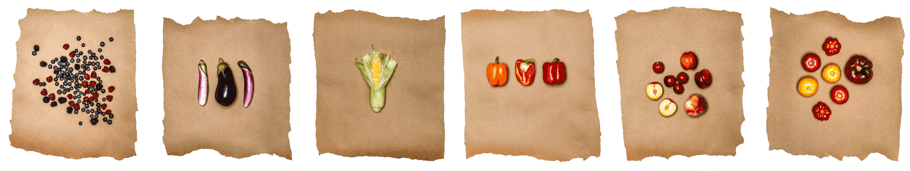
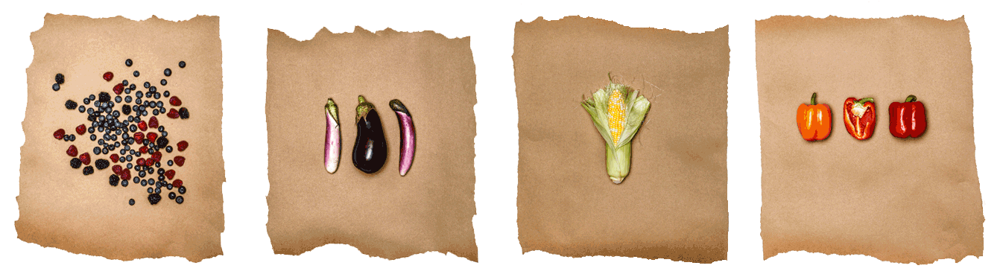

<%= !json.project.embedded ? t.include("partials/_paywall.html") : t.include("partials/_embedframe.html") %>
<%= t.include("partials/_analytics_recipes.html") %>
<%= t.include("partials/_head_recipes.html") %>
<%= !json.project.embedded ? "" : "" %>
<%= t.include("partials/_nav_recipes.html") %>


Seasonal recipes, fresh from the market
These recipes showcase the best of Bay Area seasonal produce. Many come from our region's top chefs, and all have been tested in the Chronicle Test Kitchen. Go to your local market and get cooking.
Click on the buttons or use the search box below to find recipes:
<% json.IngredientTags.forEach(function(tt){ %>
<%=tt.Tags%>
<% }); %>
View All
<% json.IngredientTags.forEach(function(ss){ %>
<% var array = [ss.Subtags].toString().split(','); %>
<% if (array != "") { %>
<% } %>
<% }); %>
Search by keywords
No search results found. Try a different ingredient or keyword.
<% json.SeasonalRecipes.forEach(function(d){ %>
<% if (d.PhotoID) { %>
<% } %>
<% }); %>